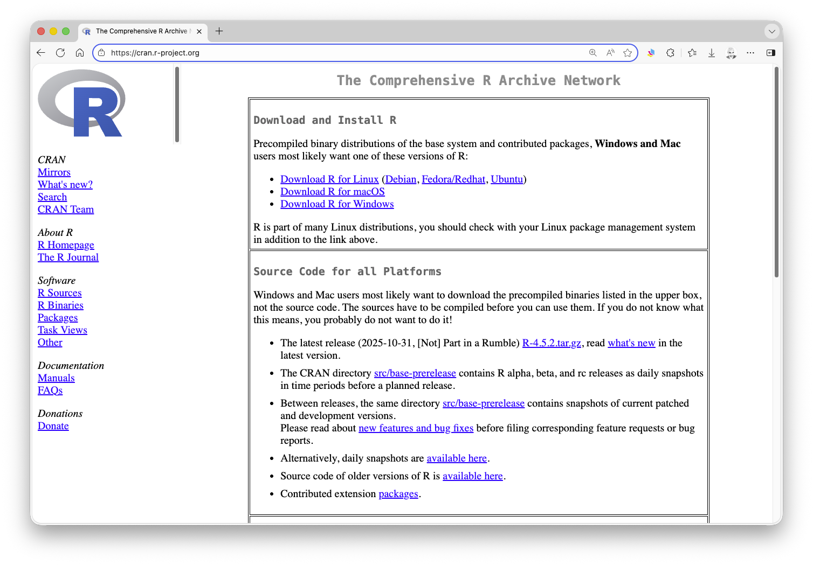
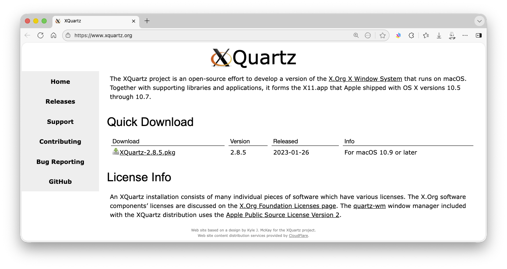

1 Getting Started with R
1.1 Objectives
The goal of this module is to get everyone’s computers set up with R and to provide background and an introduction to the R programming language and environment.
1.2 Backstory
The name R is a nod to the statistical programming language S (for “Statistics”) that inspired its creation. S was developed at Bell Laboratories by John Chambers and later sold to a small company that further developed it into S-Plus. R was then developed as an alternative to S by Ross Ihaka and Robert Gentleman in the Department of Statistics at the University of Aukland, New Zealand.
R is an high-level, interpreted language, like Python or Ruby, where commands are executed directly and sequentially, without previously compiling a program into machine-language instructions. Each statement is translated, on the fly, into a sequence of subroutines that have already been compiled into machine code.
R is open-source software, meaning that the source code for the program is freely available for anyone to modify, extend, and improve upon. R is also FREE (!) for anyone to use and distribution. The large and active community of users and developers is one of the reasons that R has become very popular in academics, science, engineering, and business – any field that requires data analytics. Developers have also built in the capacity for easily making production-quality graphics, making it a great tool for data visualization. There are thus many good reasons to learn and use R.
Here are a few of the main ones, in a nutshell:
- R is high quality software. It is actively developed by an international community of statisticians and software developers with multiple releases and bug fixes every year.
- R is FREE (as in thought). The source code is openly available under the GNU General Public License, which allows others to easily evaluate the quality of the code, contribute new functionality, and quickly fix bugs.
- R is FREE (as in beer). Whereas licenses for other statistical software such as SAS, SPSS, or Stata may cost thousands of dollars, R is available free of charge.
- R is available for multiple platforms. Installers are available for Windows, MacOS, and other Unix based systems and most packages are OS agnostic.
- R is extremely extensible. If there is a procedure you want to run that is not included in one of the standard packages, it is likely available in one of the thousands of extensions packages that have been developed and are also freely available. Many packages are distributed through CRAN (the Comprehensive R Archive Network), which is a set of servers around the world that serve as mirrored repositories for rigorously-reviewed and up-to-date versions of code and documentation for both base R and add-on packages. Bioconductor is another repository for packages that focuses on bioinformatics and related analyses. Installing packages from Bioconductor is generally done through the R package {BioManager}. Finally, many packages are distributed directly from developers via software-development and hosting platforms like GitHub.
- You can also use R to control or interface with external applications, including other programming languages (like Python, SQL, C++, NetLogo), other analysis tools (like GIS software), and databases (like MySQL, PostgreSQL, SQLite, etc). It is also always possible for you to improve R yourself. You can literally do just about anything in R, including creating your own packages for sharing.
- R has a vibrant, intelligent, and generous user community. LOTS of resources are available online for learning and troubleshooting (see, for example, the section on R at the Stack Overflow website.
R can be run in several ways:
- Interactively from a console prompt after launching the program from the command line in either a terminal window or command shell.
- In batch mode, by sourcing commands from an R script file (which is just a simple text file).
- From within an R graphical user interface (or GUI) or integrated development environment (or IDE), which accommodates both of the above.
We are going to introduce several of these ways of working with R, but the easiest and most convenient is to use an IDE.
1.3 Installing the R Software
- Download and install R from the Compehensive R Archive Network (CRAN) website. Choose the correct version for your operating system.
- If you are using MacOS, you should consider also installing XQuartz, which lets you use the X11 X Windows management software.

- Open the R program from wherever you installed it (e.g., in MacOS, double-click on the R.app application in your Applications folder; on a PC, search for and open the Rgui.exe application, which should be located somewhere inside your
C:\Program Files\R\R-[version]folder… you should see the console window and the>prompt. Note that your screen may look slightly different from the screenshots below.
Also, note that you can also run R in a terminal shell (MacOS or Unix) or from the Windows command shell after starting it with the command r. Depending on whether you have set your PATH variable to detect the R executable file, you may or may not need to first navigate into the directory containing the executable file.
- On MacOS, the default GUI will look something like this:

- On Windows, the default GUI (RGui) looks something like this:

1.4 Exploring the R Console
R can be used as an interactive calculator from the console prompt, either in a GUI or in the shell.
- Standard mathematical order of operations applies (PEMDAS – parentheses, exponents, multiplication/division, addition/subtraction).
The assignment operator
<-can be used to assign a value, the results of an operation, or specific code to an object (e.g., a variable, a function, a complex data structure).- You can also use
=, but I prefer (and recommend) to use that only to assign values to function arguments (more on this later).
- You can also use
You can set various settings to customize your interactions with R.
To change the standard prompt, use the function
options()with thepromptargument:options(prompt="<prompt text>"), where you supply, between the quotes, text with what you want the prompt to say.To list the current working directory (the default folder where dialog boxes will open and where files and output will be stored unless otherwise specified), use the function
getwd(), which has no arguments.To set the current working directory, use the function
setwd("<path>"), where you supply, between the quotes, the path to the desired directory.- On MacOS, these directory options are also available under the Misc menu.
- On Windows, you can set the working directory with the Change dir command under the File menu.
- In RStudio, the working directory can be set under the Session menu.
Within the active workspace, R keeps a log of all executed commands, and you can use the up and down arrow keys to scroll through this history. In RStudio, this list is accessible in the History tab. This history is stored in a hidden file (“.Rhistory” or “.Rapp.history”) in your current working directory.
Commands and code can also be written in a text file or script and sent to the console for execution.
- In most GUIs/IDEs, you can choose to create a new script document from the File menu, which opens in a text editor of some kind.
- From within the text editor, you can send an individual command to the R interpreter by positioning your cursor somewhere in the line you want to execute and hitting
⌘-RETURN(Mac) or eithercontrol-R(for the default GUI that ships with R) orcontrol-ENTER(for the RStudio GUI) (PC). - To send a set of commands to the console as a batch, you can highlight the code lines of code you want to execute and then use these same commands.
- You can include comments in your scripts by prefacing them with
#. Comments are not interpreted as code. - Script files can be saved just like any other type of text file, usually with the “.R” extension by default.
To view the names of all of the objects in your current workspace, you can use the
ls()function. In RStudio, these also all appear in the Environment tab.To clear objects from your workspace, use the
rm()function, where an individual object’s name or a list of object names can be included as the argument torm().To remove all objects from your workspace, you can use
rm(list=ls()).- In this case, you are passing to the
rm()(orremove()) function a list consisting of all the objects in the workspace, which is provided by thels()function.
- In this case, you are passing to the
CHALLENGE
Fire up R in your mode of choice (by typing “R” at the console prompt in the Terminal in MacOS…

… or by typing “R” or “rterm” or “R.exe” from a cmd or other shell prompt in Windows)…

… and then practice interacting with the software via the command line and console window.
NOTE: To run R like this from a command prompt, you may need to add the path to the program’s executable file to your system’s PATH environmental variable. To do this, you need to know the path to the location where R was installed. On MacOS, this path is usually… “/usr/local/bin/R”, which typically is a symbolic link that points to the actual R framework, located within your system’s
/Library/Frameworks/directory. On Windows, the path to the R executable is typically “C:\Program Files\R\R-x.x.x”, where “x.x.x” is the version number, e.g., “4.5.2”.
When you install R on MacOS, “/usr/local/bin” is generally already part of the system path, so you likely will not need to make any additional changes to the PATH variable, but this is not the case for Windows. To add R to the system PATH on Windows:
- Open the Windows search bar and type “environment variables”, then select “Edit the system environment variables”
- Click “Environment Variables”
- Under both the “User variables” and ““System variables” sections, find the “Path” variable and click the “Edit” button
- Click “New” and add the path to R’s executable
bin/folder, typically “C:\Program Files\R\R-x.x.x\bin\x64” (adjust the version number as needed)- Click “OK” on all windows to save changes
Once R is running in your console, try doing some math in R by using it to evaluate the following expressions:
- 8 plus 5
- 10 minus 6 divided by 2
- (10 minus 6) divided by 2
- 10 times 5
- 15 divided by 5
- 10 raised to the 5th power
- 3 times \(\pi\) (where \(\pi\) is a built-in constant)
Show Code
8 + 5Show Output
## [1] 13Show Code
10 - 6/2Show Output
## [1] 7Show Code
(10 - 6)/2Show Output
## [1] 2Show Code
10 * 5Show Output
## [1] 50Show Code
15/5Show Output
## [1] 3Show Code
10^5Show Output
## [1] 1e+05Show Code
3 * piShow Output
## [1] 9.424778Try working with assignments:
- Assign the number 6 to a variable called x.
- Assign the number 5 to a variable called y.
- Assign x * y to a variable called z.
- Assign x^2 to a variable called x2.
Show Code
x <- 6
xShow Output
## [1] 6Show Code
y <- 5
yShow Output
## [1] 5Show Code
z <- x * y
zShow Output
## [1] 30Show Code
x2 <- x^2
x2Show Output
## [1] 36Try out some of the built-in functions in R:
- Assign the number 10 to a variable called x.
- Take the natural log of x using the
log()function. - Find the factorial of x using the
factorial()function. - Assign the number 81 to a variable called y.
- Take the square root of y using the
sqrt()function. - Assign the number -8.349218 to a variable called z.
- Use
?roundorhelp(round)to view the help file for the functionround(). - Round z to the 1000ths place.
- Use
?abs()to view the help file for the functionabs(). - Take the absolute value of z * y.
Show Code
x <- 10
log(x)Show Output
## [1] 2.302585Show Code
factorial(x)Show Output
## [1] 3628800Show Code
y <- 81
sqrt(y)Show Output
## [1] 9Show Code
z <- -8.349218
round(z, digits = 3)Show Output
## [1] -8.349Show Code
abs(z * y)Show Output
## [1] 676.2867Use the
ls()function to list the variables currently stored in your active session.- How many variables do you have?
Show Code
ls()Show Output
## [1] "x" "x2" "y" "z"- Use the command
rm(list=ls())to clear all the variables you have defined. - What happens if you type a function name without including the parentheses?
- What happens if you type a function with an invalid or missing argument?
Concept Review
- Interacting with R from the console prompt
- Variable assignment:
<- - Calling built-in functions:
function(<arguments>) - Accessing R documentation and help files:
?functionorhelp(function) - Workspaces and the working directory:
getwd(),setwd() - Listing and removing variables from the environment:
ls(),rm() - Accessing the console history